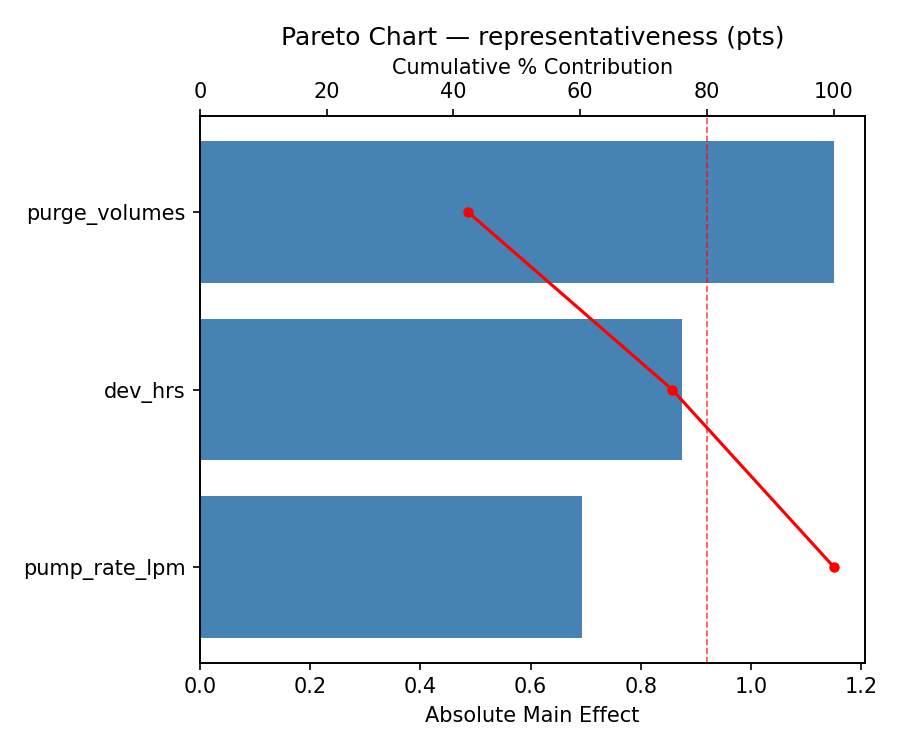
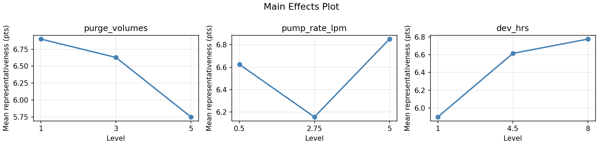
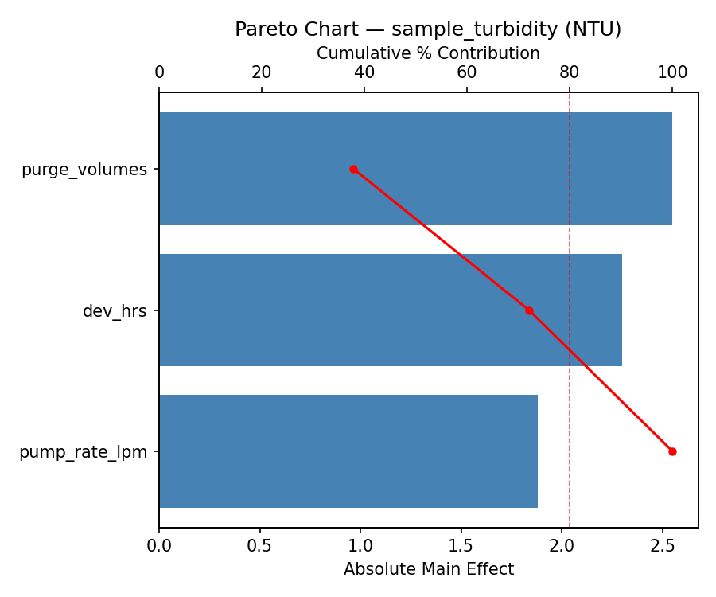
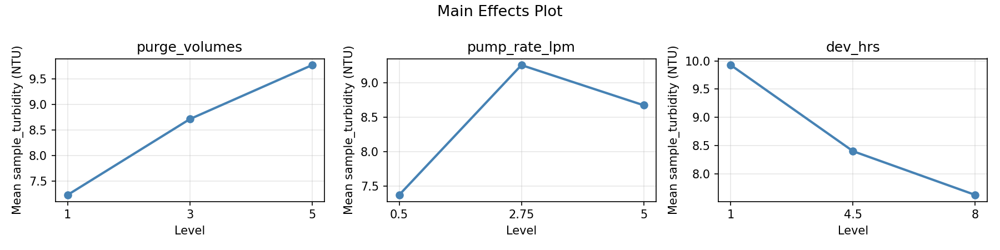
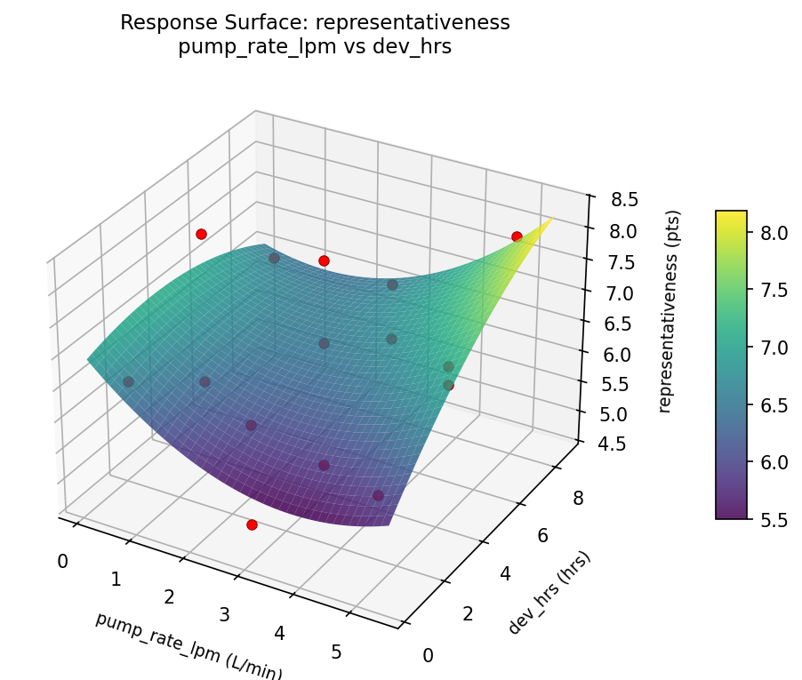
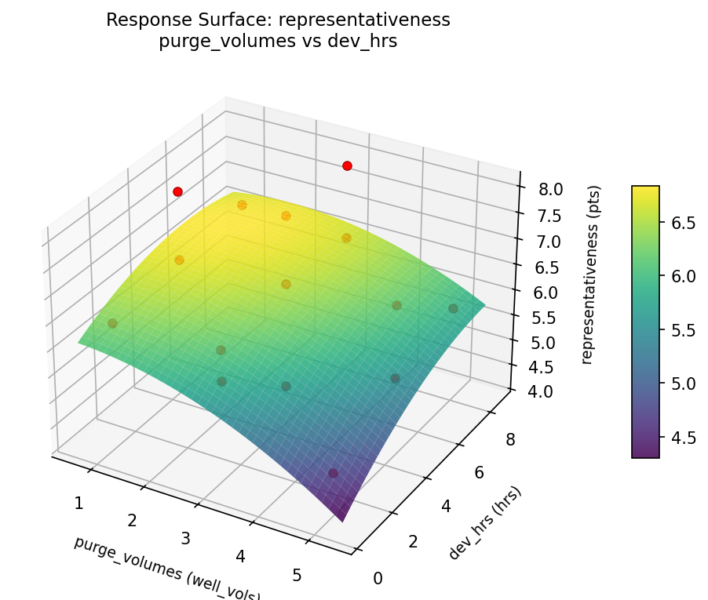
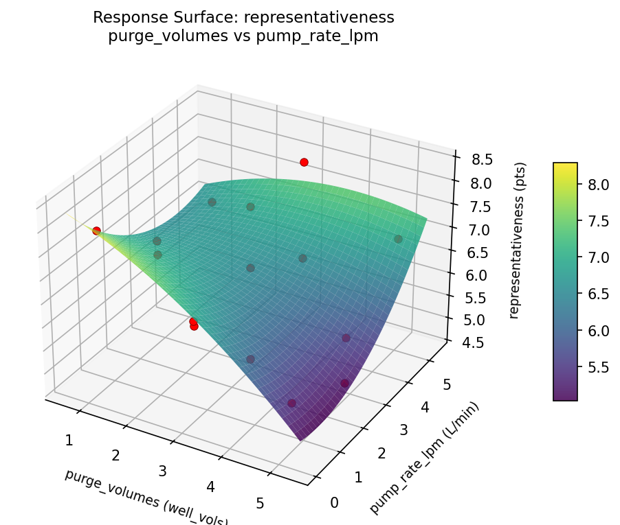
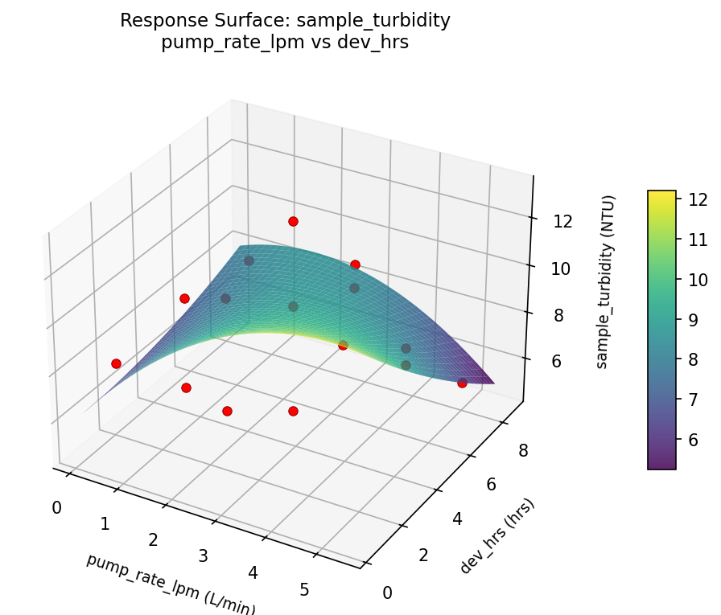
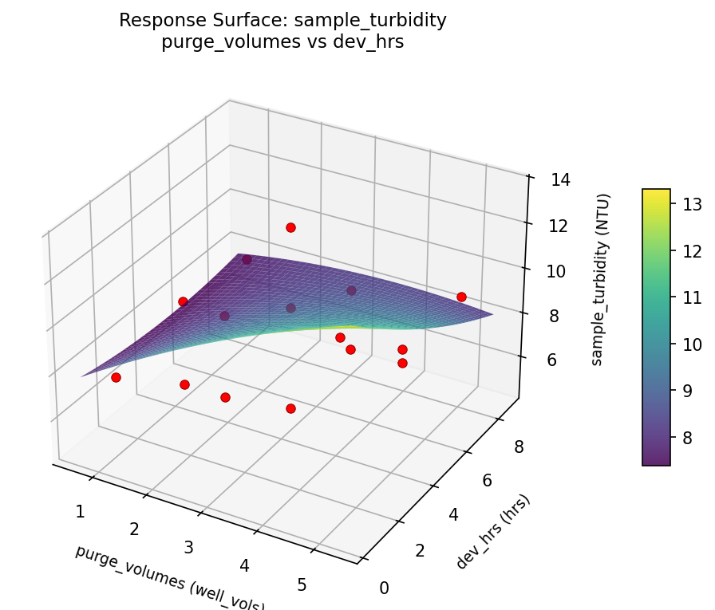
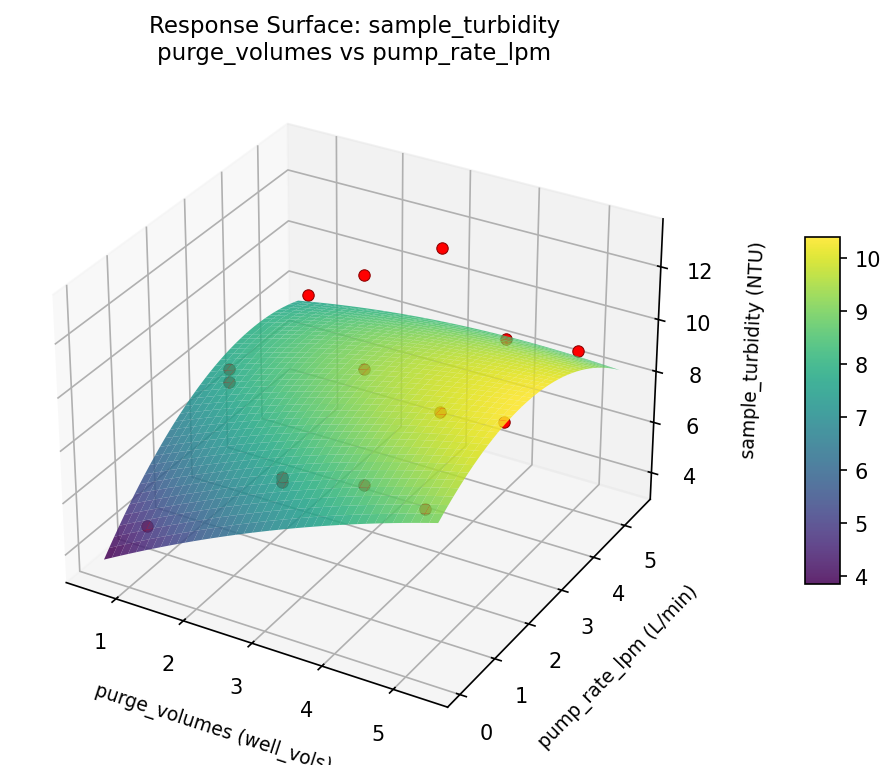

Summary
This experiment investigates groundwater sampling protocol. Box-Behnken design to maximize sample representativeness and minimize turbidity by tuning purge volume, pump rate, and well development time.
The design varies 3 factors: purge volumes (well_vols), ranging from 1 to 5, pump rate lpm (L/min), ranging from 0.5 to 5.0, and dev hrs (hrs), ranging from 1 to 8. The goal is to optimize 2 responses: representativeness (pts) (maximize) and sample turbidity (NTU) (minimize). Fixed conditions held constant across all runs include well type = monitoring, analytes = metals.
A Box-Behnken design was chosen because it efficiently fits quadratic models with 3 continuous factors while avoiding extreme corner combinations — requiring only 15 runs instead of the 8 needed for a full factorial at two levels.
Quadratic response surface models were fitted to capture potential curvature and factor interactions. The RSM contour plots below visualize how pairs of factors jointly affect each response.
Key Findings
For representativeness, the most influential factors were purge volumes (42.3%), dev hrs (32.2%), pump rate lpm (25.5%). The best observed value was 8.0 (at purge volumes = 5, pump rate lpm = 5, dev hrs = 4.5).
For sample turbidity, the most influential factors were purge volumes (37.9%), dev hrs (34.2%), pump rate lpm (28.0%). The best observed value was 4.7 (at purge volumes = 3, pump rate lpm = 2.75, dev hrs = 4.5).
Recommended Next Steps
- Run confirmation experiments at the predicted optimal settings to validate the model.
- Consider whether any fixed factors should be varied in a future study.
Experimental Setup
Factors
| Factor | Low | High | Unit |
|---|
purge_volumes | 1 | 5 | well_vols |
pump_rate_lpm | 0.5 | 5.0 | L/min |
dev_hrs | 1 | 8 | hrs |
Fixed: well_type = monitoring, analytes = metals
Responses
| Response | Direction | Unit |
|---|
representativeness | ↑ maximize | pts |
sample_turbidity | ↓ minimize | NTU |
Configuration
{
"metadata": {
"name": "Groundwater Sampling Protocol",
"description": "Box-Behnken design to maximize sample representativeness and minimize turbidity by tuning purge volume, pump rate, and well development time"
},
"factors": [
{
"name": "purge_volumes",
"levels": [
"1",
"5"
],
"type": "continuous",
"unit": "well_vols"
},
{
"name": "pump_rate_lpm",
"levels": [
"0.5",
"5.0"
],
"type": "continuous",
"unit": "L/min"
},
{
"name": "dev_hrs",
"levels": [
"1",
"8"
],
"type": "continuous",
"unit": "hrs"
}
],
"fixed_factors": {
"well_type": "monitoring",
"analytes": "metals"
},
"responses": [
{
"name": "representativeness",
"optimize": "maximize",
"unit": "pts"
},
{
"name": "sample_turbidity",
"optimize": "minimize",
"unit": "NTU"
}
],
"settings": {
"operation": "box_behnken",
"test_script": "use_cases/235_groundwater_sampling/sim.sh"
}
}
Experimental Matrix
The Box-Behnken Design produces 15 runs. Each row is one experiment with specific factor settings.
| Run | purge_volumes | pump_rate_lpm | dev_hrs |
|---|
| 1 | 3 | 0.5 | 1 |
| 2 | 3 | 2.75 | 4.5 |
| 3 | 5 | 2.75 | 8 |
| 4 | 5 | 2.75 | 1 |
| 5 | 3 | 2.75 | 4.5 |
| 6 | 3 | 2.75 | 4.5 |
| 7 | 1 | 2.75 | 8 |
| 8 | 5 | 0.5 | 4.5 |
| 9 | 3 | 0.5 | 8 |
| 10 | 5 | 5 | 4.5 |
| 11 | 1 | 2.75 | 1 |
| 12 | 3 | 5 | 8 |
| 13 | 1 | 0.5 | 4.5 |
| 14 | 1 | 5 | 4.5 |
| 15 | 3 | 5 | 1 |
Step-by-Step Workflow
1
Preview the design
$ python doe.py info --config use_cases/235_groundwater_sampling/config.json
2
Generate the runner script
$ python doe.py generate --config use_cases/235_groundwater_sampling/config.json \
--output use_cases/235_groundwater_sampling/results/run.sh --seed 42
3
Execute the experiments
$ bash use_cases/235_groundwater_sampling/results/run.sh
4
Analyze results
$ python doe.py analyze --config use_cases/235_groundwater_sampling/config.json
5
Get optimization recommendations
$ python doe.py optimize --config use_cases/235_groundwater_sampling/config.json
6
Generate the HTML report
$ python doe.py report --config use_cases/235_groundwater_sampling/config.json \
--output use_cases/235_groundwater_sampling/results/report.html
Real-World Experiment Workflow
ℹ
Physical Geoscience Experiment? Use the Manual Workflow
Geoscience experiments involve real soil, rock, water, and field conditions. Results require physical sampling and laboratory analysis. The simulation script above is for demonstration. For your real experiments, use record, status, and export-worksheet.
$ python doe.py export-worksheet --config use_cases/235_groundwater_sampling/config.json \
--format csv --output worksheet.csv
$ python doe.py status --config use_cases/235_groundwater_sampling/config.json
$ python doe.py record --config use_cases/235_groundwater_sampling/config.json --run 1
$ python doe.py analyze --config use_cases/235_groundwater_sampling/config.json --partial
$ python doe.py analyze --config use_cases/235_groundwater_sampling/config.json
$ python doe.py optimize --config use_cases/235_groundwater_sampling/config.json
$ python doe.py report --config use_cases/235_groundwater_sampling/config.json \
--output report.html
✔
Works Without a Test Script
The analysis pipeline doesn't care how results were produced. Record your measurements with record, and the full analysis, optimization, and reporting pipeline works identically. Use --partial to get early insights before all runs are complete.
Features Exercised
| Feature | Value |
|---|
| Design type | box_behnken |
| Factor types | continuous (all 3) |
| Arg style | double-dash |
| Responses | 2 (representativeness ↑, sample_turbidity ↓) |
| Total runs | 15 |
Analysis Results
Generated from actual experiment runs using the DOE Helper Tool.
Response: representativeness
Top factors: purge_volumes (42.3%), dev_hrs (32.2%), pump_rate_lpm (25.5%).
Pareto Chart

Main Effects Plot

Response: sample_turbidity
Top factors: purge_volumes (37.9%), dev_hrs (34.2%), pump_rate_lpm (28.0%).
Pareto Chart

Main Effects Plot

Response Surface Plots
3D surfaces fitted with quadratic RSM. Red dots are observed data points.
representativeness pump rate lpm vs dev hrs

representativeness purge volumes vs dev hrs

representativeness purge volumes vs pump rate lpm

sample turbidity pump rate lpm vs dev hrs

sample turbidity purge volumes vs dev hrs

sample turbidity purge volumes vs pump rate lpm

Full Analysis Output
RSM surface: rsm_representativeness_purge_volumes_vs_pump_rate_lpm.png
RSM surface: rsm_representativeness_purge_volumes_vs_dev_hrs.png
RSM surface: rsm_representativeness_pump_rate_lpm_vs_dev_hrs.png
RSM surface: rsm_sample_turbidity_purge_volumes_vs_pump_rate_lpm.png
RSM surface: rsm_sample_turbidity_purge_volumes_vs_dev_hrs.png
RSM surface: rsm_sample_turbidity_pump_rate_lpm_vs_dev_hrs.png
=== Main Effects: representativeness ===
Factor Effect Std Error % Contribution
--------------------------------------------------------------
purge_volumes 1.1500 0.2645 42.3%
dev_hrs 0.8750 0.2645 32.2%
pump_rate_lpm 0.6929 0.2645 25.5%
=== Summary Statistics: representativeness ===
purge_volumes:
Level N Mean Std Min Max
------------------------------------------------------------
1 4 6.9000 0.6782 6.4000 7.9000
3 7 6.6286 1.1572 4.7000 8.0000
5 4 5.7500 0.8737 4.8000 6.9000
pump_rate_lpm:
Level N Mean Std Min Max
------------------------------------------------------------
0.5 4 6.6250 0.9845 5.5000 7.9000
2.75 7 6.1571 1.1646 4.7000 8.0000
5 4 6.8500 0.8737 5.9000 8.0000
dev_hrs:
Level N Mean Std Min Max
------------------------------------------------------------
1 4 5.9000 0.7789 4.8000 6.5000
4.5 7 6.6143 1.1950 4.7000 8.0000
8 4 6.7750 0.9106 5.8000 8.0000
=== Main Effects: sample_turbidity ===
Factor Effect Std Error % Contribution
--------------------------------------------------------------
purge_volumes 2.5500 0.6346 37.9%
dev_hrs 2.3000 0.6346 34.2%
pump_rate_lpm 1.8821 0.6346 28.0%
=== Summary Statistics: sample_turbidity ===
purge_volumes:
Level N Mean Std Min Max
------------------------------------------------------------
1 4 7.2250 1.7231 4.7000 8.5000
3 7 8.7143 3.0119 5.1000 13.1000
5 4 9.7750 1.6378 8.6000 12.2000
pump_rate_lpm:
Level N Mean Std Min Max
------------------------------------------------------------
0.5 4 7.3750 1.8007 4.7000 8.6000
2.75 7 9.2571 2.7367 5.1000 13.1000
5 4 8.6750 2.6361 5.3000 11.7000
dev_hrs:
Level N Mean Std Min Max
------------------------------------------------------------
1 4 9.9250 2.3599 7.6000 12.2000
4.5 7 8.4000 2.8519 4.7000 13.1000
8 4 7.6250 1.6276 5.3000 9.1000
Pareto chart (representativeness): use_cases/235_groundwater_sampling/results/analysis/pareto_representativeness.png
Pareto chart (sample_turbidity): use_cases/235_groundwater_sampling/results/analysis/pareto_sample_turbidity.png
Main effects (representativeness): use_cases/235_groundwater_sampling/results/analysis/main_effects_representativeness.png
Main effects (sample_turbidity): use_cases/235_groundwater_sampling/results/analysis/main_effects_sample_turbidity.png
Optimization Recommendations
=== Optimization: representativeness ===
Direction: maximize
Best observed run: #3
purge_volumes = 5
pump_rate_lpm = 5
dev_hrs = 4.5
Value: 8.0
RSM Model (linear, R² = 0.0145, Adj R² = -0.2543):
Coefficients:
intercept +6.4667
purge_volumes -0.0000
pump_rate_lpm -0.1625
dev_hrs -0.0125
RSM Model (quadratic, R² = 0.5260, Adj R² = -0.3271):
Coefficients:
intercept +6.6667
purge_volumes -0.0000
pump_rate_lpm -0.1625
dev_hrs -0.0125
purge_volumes*pump_rate_lpm +0.0250
purge_volumes*dev_hrs +0.4250
pump_rate_lpm*dev_hrs -0.6500
purge_volumes^2 +0.3417
pump_rate_lpm^2 +0.3167
dev_hrs^2 -1.0333
Curvature analysis:
dev_hrs coef=-1.0333 concave (has a maximum)
purge_volumes coef=+0.3417 convex (has a minimum)
pump_rate_lpm coef=+0.3167 convex (has a minimum)
Notable interactions:
pump_rate_lpm*dev_hrs coef=-0.6500 (antagonistic)
purge_volumes*dev_hrs coef=+0.4250 (synergistic)
Predicted optimum (from linear model):
purge_volumes = 3
pump_rate_lpm = 0.5
dev_hrs = 1
Predicted value: 6.6417
Model quality: Weak fit — consider adding center points or using a different design.
Factor importance:
1. dev_hrs (effect: 1.1, contribution: 54.3%)
2. pump_rate_lpm (effect: 0.5, contribution: 26.2%)
3. purge_volumes (effect: 0.4, contribution: 19.5%)
=== Optimization: sample_turbidity ===
Direction: minimize
Best observed run: #9
purge_volumes = 3
pump_rate_lpm = 2.75
dev_hrs = 4.5
Value: 4.7
RSM Model (linear, R² = 0.0140, Adj R² = -0.2549):
Coefficients:
intercept +8.6000
purge_volumes +0.2875
pump_rate_lpm +0.1750
dev_hrs +0.1875
RSM Model (quadratic, R² = 0.5166, Adj R² = -0.3536):
Coefficients:
intercept +7.2667
purge_volumes +0.2875
pump_rate_lpm +0.1750
dev_hrs +0.1875
purge_volumes*pump_rate_lpm -0.0250
purge_volumes*dev_hrs +0.0500
pump_rate_lpm*dev_hrs +0.8750
purge_volumes^2 -0.0083
pump_rate_lpm^2 -0.6333
dev_hrs^2 +3.1417
Curvature analysis:
dev_hrs coef=+3.1417 convex (has a minimum)
pump_rate_lpm coef=-0.6333 concave (has a maximum)
purge_volumes coef=-0.0083 negligible curvature
Notable interactions:
pump_rate_lpm*dev_hrs coef=+0.8750 (synergistic)
Predicted optimum (from linear model):
purge_volumes = 5
pump_rate_lpm = 2.75
dev_hrs = 8
Predicted value: 9.0750
Model quality: Weak fit — consider adding center points or using a different design.
Factor importance:
1. dev_hrs (effect: 3.4, contribution: 67.7%)
2. pump_rate_lpm (effect: 1.0, contribution: 20.7%)
3. purge_volumes (effect: 0.6, contribution: 11.5%)